VIVA SOCCER: plataforma en la nube para la evaluación y el seguimiento de los alumnos de una escuela de fútbol infantil.
VIVA SOCCER es una aplicación web, desplegada en la nube, para una escuela de fútbol infantil de Tijuana. Reúne en un solo lugar el padrón de alumnos y sus tutores, la captura de evaluaciones técnicas en la cancha (pase, recepción y tiro, en escala de 1 a 10), el histórico y la progresión de cada niño, y las boletas que se entregan a las familias. Desde octubre expone además una API REST, que consume una aplicación móvil desarrollada por el equipo en otra materia.
| Dato | Valor |
|---|---|
| Aplicación en producción | https://vivasoccer-production.up.railway.app (desde el 16 de noviembre de 2026) |
| Repositorio | github.com/joseluis-buo/viva_soccer, rama main, {{COMMITS}} commits ({{COMMITS_DESDE}} desde el segundo avance) |
| Pila tecnológica | Python 3.12, Django 5.2, HTMX 2.0, Tailwind CSS 3.4, Chart.js 4.4, Django REST Framework 3.18 con Simple JWT, PostgreSQL 18 (Neon), gunicorn y WhiteNoise |
| Pruebas | {{TOTAL_PRUEBAS}} pruebas automatizadas y una prueba de punta a punta con Playwright, en GitHub Actions |
Diseñar, construir, desplegar en la nube y evaluar la interfaz de VIVA SOCCER para que la coordinación (administrador y secretaria) y los entrenadores registren y consulten la evaluación técnica de los alumnos con eficacia, eficiencia y satisfacción medibles, conforme a la definición de usabilidad de la norma ISO 9241-11 (International Organization for Standardization [ISO], 2018), y exponer esa misma información, con los permisos de cada rol, a la aplicación móvil del proyecto.
El objetivo de la propuesta mencionaba a las familias como usuarias de la interfaz. En la versión final, la consulta de las familias se resolvió del lado del servidor, mediante la API; su interfaz pertenece a la aplicación móvil, que es de otra materia y no se evalúa en este reporte.
Los siete objetivos específicos y sus metas son los de la propuesta (§1.4). La tabla indica su estado real al cierre, con la evidencia que lo respalda. Lo que no se midió se reporta como pendiente, no como cumplido.
| Clave | Meta medible | Estado | Evidencia |
|---|---|---|---|
| OE1 | Evaluar a un alumno en 20 s o menos en promedio; un grupo de 15 en menos de 6 min. | Sin medir | La captura cumple el diseño (una tarjeta por alumno, tres campos de 56 px, guardado en bloque) y una prueba E2E recorre el flujo, pero el tiempo con usuarios reales no se ha medido (sección 9.4). |
| OE2 | Registrar un alumno en menos de 2 min, sin errores de validación en 80 % de los intentos. | Sin medir | Alta en un modal sobre el padrón, con el tutor nuevo o existente en el mismo formulario. Falta la medición con usuarios. |
| OE3 | Tasa de éxito de 90 % o más en las tareas de las pruebas con usuarios. | Sin medir | Las pruebas con usuarios están planeadas, no realizadas. |
| OE4 | Puntaje SUS promedio de 75 o más. | Sin medir | Cuestionario y cálculo definidos en el plan (sección 9.4). |
| OE5 | Contraste de 4.5:1 en el 100 % de las pantallas; controles táctiles de al menos 44 × 44 px en la captura. | Cumplido | Contrastes de 14.6:1 (texto principal) y 6.4:1 (secundario) documentados en el design system. Campos de 44 px, calificaciones de 56 px y botón de 52 px. Lighthouse: 100 en accesibilidad en las seis mediciones finales. |
| OE6 | Carga inicial menor a 3 s en 4G simulada; confirmación de guardado en menos de 1 s. | Parcial | Carga inicial: el peor caso medido es 1.8 s (login en móvil, Lighthouse en producción). La confirmación de guardado no se ha cronometrado. |
| OE7 | Cero problemas de severidad 3 o 4 sin resolver en el prototipo final. | Sin medir | Requiere la evaluación heurística y las pruebas con usuarios; ninguna se ha realizado. |
En resumen: los objetivos que se pueden verificar con herramientas automáticas (OE5 y la carga inicial de OE6) se cumplieron con evidencia; los que dependen de usuarios reales (OE1 a OE4 y OE7) quedan como plan para las sesiones de prueba descritas en la sección 9.4.
En la escuela, la evaluación técnica ocurre en la cancha, pero se anotaba en libretas y hojas de cálculo; la versión anterior del sistema, una aplicación de escritorio en C# (WinForms), solo vivía en la computadora de la oficina. La información llegaba tarde, a veces incompleta, y las familias recibían poca retroalimentación sobre el avance de sus hijos.
VIVA SOCCER resuelve ese problema con una aplicación web con una pantalla de inicio por rol. El administrador ve el panel de indicadores de la temporada; la secretaria mantiene el padrón, los tutores, la corrección de evaluaciones y las boletas; el entrenador captura pase, recepción y tiro desde el celular. Un cuarto rol, el tutor (padre o madre), consulta el desempeño de sus hijos desde la aplicación móvil, a través de la API.
Respecto al segundo avance (14 de octubre de 2026), el alcance creció en tres direcciones: se agregó la API REST con autenticación JWT para la aplicación móvil, junto con los modelos que la sostienen (cuentas de tutor, códigos de activación, dispositivos, comunicados y asignación de grupos a entrenadores); se cerraron los requerimientos pendientes de la web (búsqueda por folio, grupos sin evaluar y exportación a CSV); y se completó el flujo en la nube: base de datos PostgreSQL en Neon con entornos separados, integración continua en GitHub Actions, despliegue en Railway y monitoreo de errores con Sentry.
Este reporte sigue los dos flujos del proyecto, el de diseño (frontend) y el técnico (backend y nube), y reporta los resultados reales de las pruebas, incluidos los problemas que esas pruebas encontraron y cómo se corrigieron.
La investigación de usuarios se documentó en la propuesta y en el segundo avance; aquí se resume como evidencia del diseño. Se definieron tres proto-personas, una por perfil de uso.
| Persona | Contexto | Necesidad |
|---|---|---|
| Laura Méndez, 41 Coordinadora administrativa | Escritorio, con interrupciones de padres que llegan a inscribir. | Padrón al día, indicadores por categoría y teléfonos bien capturados. “Necesito abrir algo y ver cómo vamos, no armar un Excel cada fin de mes.” |
| Antonio “Toño” Ramírez, 27 Entrenador Sub-8 y Sub-10 | Cancha al aire libre, sol directo, prisa y una mano ocupada. | Ver solo su grupo y calificar rápido con el pulgar, sin perder datos. “Si me toma más de lo que dura un ejercicio, mejor lo apunto en la libreta.” |
| Claudia Torres, 36 Madre de un alumno Sub-10 | Ratos cortos en el celular: transporte o descanso. | Saber en qué mejora su hijo, sin lenguaje técnico. “Me dicen que va bien, pero quisiera verlo con algo más que un ‘échale ganas’.” |
Fuente: Propuesta de Proyecto Final, §2.1. Son proto-personas que se validarían con entrevistas breves.
La arquitectura de la información se organizó por rol: después de iniciar sesión, cada usuario llega directo a su pantalla y solo ve las secciones que le corresponden (Figura 1). La captura, el flujo más crítico porque ocurre en la cancha, se diseñó para llegar al grupo en dos toques y evaluar alumno por alumno sin salir de la lista (Figura 2).
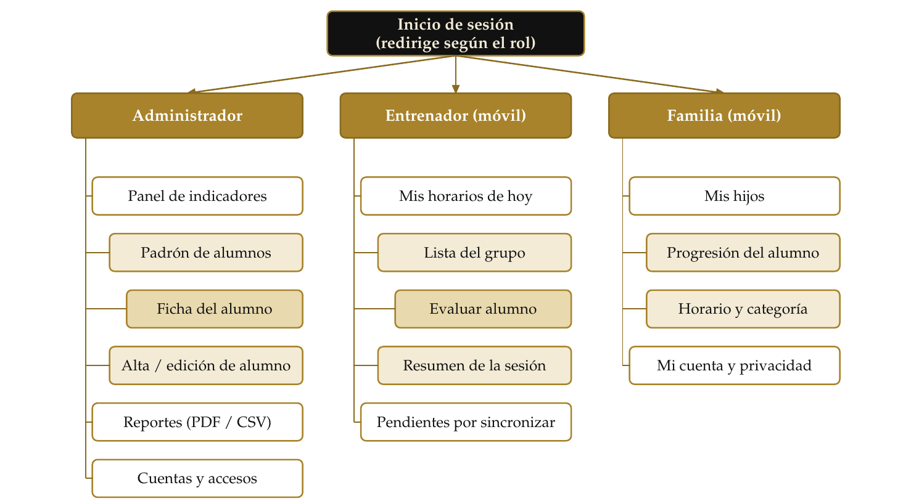
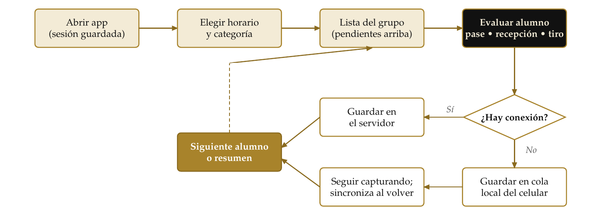
Al implementar, el mapa cambió en tres puntos: se agregó el rol de secretaria (padrón, tutores, corrección y boletas); el tutor se volvió un registro propio, porque los hermanos comparten tutor; y las pantallas de familia y del entrenador “en el celular” se resolvieron en dos lugares distintos: la captura web es mobile-first, y la aplicación móvil consume la API. La rama sin conexión del flujo (guardar en una cola local) no se implementó en la web; la API la soporta con sincronización idempotente (sección 6.4).
Las diez heurísticas de Nielsen (1994) se tradujeron a criterios propios del proyecto. La tabla compara lo que se planeó revisar con lo que hay en la versión final.
| Heurística | Criterio de VIVA SOCCER | En la versión final |
|---|---|---|
| 1. Visibilidad del estado | Confirmación al guardar; indicador de pendientes. | Mensaje “Se guardaron N evaluaciones”, barra de avance “Capturados N / M” y borde de color en la tarjeta ya capturada. |
| 2. Relación con el mundo real | Vocabulario de la escuela. | Categorías, horarios, pase, recepción, tiro y folio VS-0000. |
| 3. Control y libertad | Corregir sin salir de la lista. | Reenviar la captura actualiza en lugar de duplicar; la ficha permite editar y borrar evaluaciones. |
| 4. Consistencia | Mismos componentes en todas las pantallas. | Tokens únicos en tailwind.config.js y clases de componente compartidas. |
| 5. Prevención de errores | Una evaluación por fecha; teléfono validado. | Restricción en la base de datos, validación 1–10 y formato 55 1234 5678. |
| 6. Reconocer antes que recordar | Folio e iniciales visibles. | Folio en padrón, ficha y captura; ahora también se busca por folio (RF-03). |
| 7. Flexibilidad y eficiencia | Avance al siguiente pendiente. | Pendiente: se guarda el grupo en bloque; no hay salto automático al siguiente alumno. |
| 8. Diseño minimalista | Solo lo necesario para calificar. | Tres campos por alumno y una observación opcional. |
| 9. Recuperarse de errores | Mensajes claros. | Errores por campo, en español. |
| 10. Ayuda y documentación | Indicaciones para las familias. | Fuera de la web: corresponde a la aplicación móvil. |
Fuente: Propuesta (§2) y segundo avance, actualizada con el estado final.
Trabajo futuro de UX. No se elaboraron el mapa de empatía ni los wireframes de baja fidelidad en Figma que contemplaba el cronograma, y las dos evaluaciones heurísticas formales (sobre wireframes y sobre el prototipo) no se realizaron. La tabla anterior es una revisión del equipo contra los criterios, no una evaluación heurística con severidades.
El design system vive en design/design.html y se trasladó sin pérdidas a tailwind.config.js, que define una paleta cerrada: solo existen los nueve colores del diseño, no la paleta por defecto de Tailwind. Es regla del proyecto que ninguna plantilla use un color hexadecimal suelto.
| Token | Valor | Uso |
|---|---|---|
bg-base | #12081F | Fondo de la aplicación e inputs sobre superficie. |
bg-surface | #1E1033 | Tarjetas, tablas, modales y barra de navegación. |
border | #2D1B4E | Bordes, encabezado de tabla y divisores. |
accent | #C6FF00 | Botón primario, cifra clave, fila activa y serie principal (máximo tres usos por pantalla). |
accent-secondary | #7B2FF7 | Filtro activo, avatares y segunda serie de las gráficas. |
text-primary / text-muted | #F5F3FA / #A79FB8 | Texto principal (14.6:1 sobre el fondo) y secundario (6.4:1). |
success / danger | #3DDC91 / #FF4D6D | Confirmación y deltas positivos; errores y acciones destructivas. |
La tipografía usa tres familias: Barlow Condensed para títulos, cifras y calificaciones; Barlow para datos y cuerpo; e IBM Plex Mono para folios, fechas y teléfonos. Las alturas táctiles se fijaron en 44 px para campos, 52 px para el botón primario y 56 px para los campos de calificación de la captura. El fondo oscuro con neón se eligió para leer bajo el sol de la cancha. Para las gráficas, static/js/paleta.js replica los mismos tokens, de modo que Chart.js tampoco usa colores sueltos.
El prototipo de alta fidelidad se construyó directamente en HTML, en design/design.html: identidad, login, panel, padrón, formulario de alumno, captura y ficha, más la especificación de componentes (sección 08 del archivo). Usar HTML en lugar de una herramienta de diseño permitió que lo evaluado en el diseño fuera exactamente lo que después se implementó. Las pantallas de tutores y de la boleta se implementaron sin maqueta previa; llevarlas a design.html queda como trabajo futuro.
El paso del diseño al código sigue una cadena de tres eslabones: el token se define una vez en tailwind.config.js; las clases de componente en static/src/input.css (.btn-primario, .btn-fantasma, .campo, .chip, .tarjeta, .etiqueta, .nota-input) lo aplican; y las plantillas de Django solo usan esas clases. Cambiar un token actualiza botones, tablas y gráficas a la vez.
Tailwind se compila con su binario standalone (versión 3.4.17), sin Node ni package.json; el script bin/compilar_css.py lo descarga si falta y compila. La interactividad usa HTMX 2.0, servido desde el propio sitio: el panel lateral del padrón y los modales de alumno, tutor y evaluación se cargan con hx-get sin recargar la página. HTMX y Chart.js se sirven localmente, sin CDN, porque en la cancha la señal es irregular.
Las capturas de esta sección se tomaron el 16 de noviembre de 2026 con Playwright, contra un servidor local con una base SQLite temporal y los datos ficticios de seed_demo; nunca contra la base de producción. Las de escritorio se tomaron a 1366 × 768 px y la de la captura a 390 px de ancho, el tamaño de un celular.
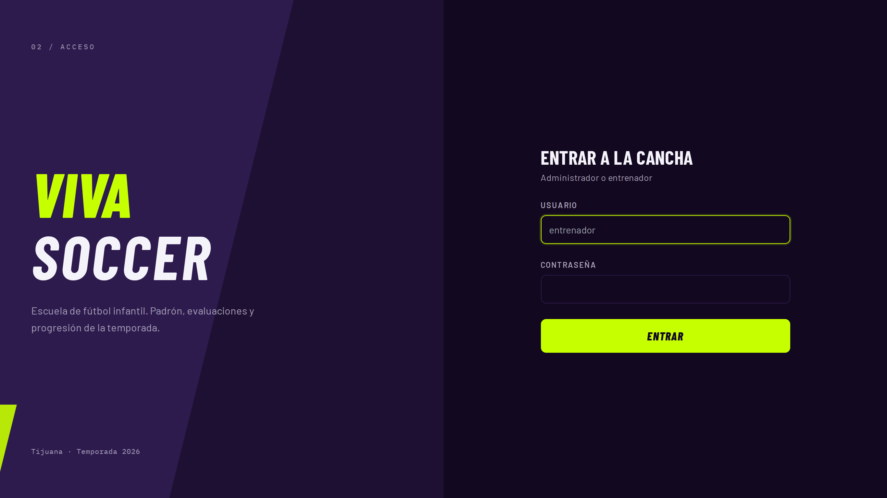
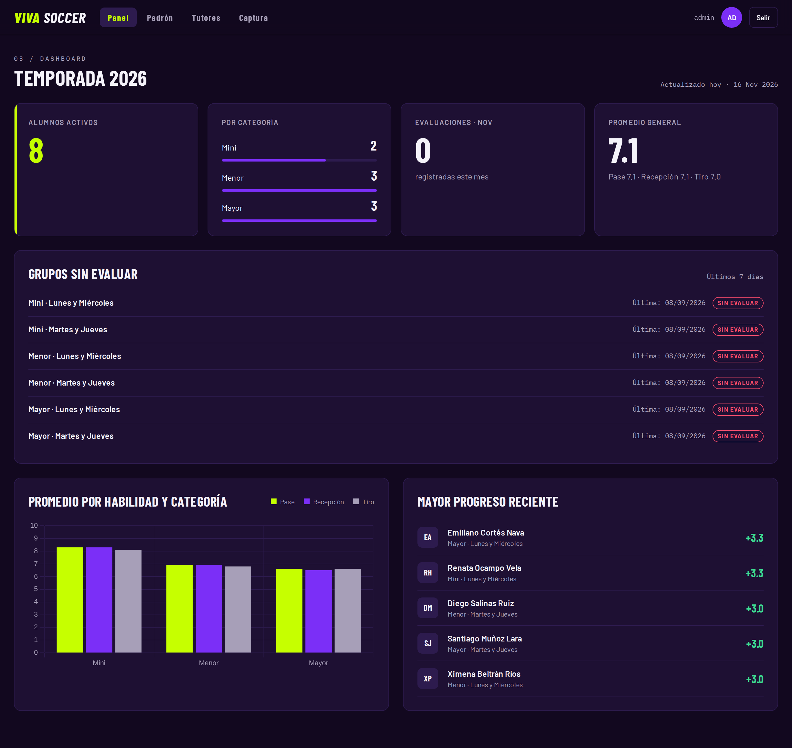
En la Figura 4, todos los grupos aparecen como “sin evaluar” porque las evaluaciones de los datos de ejemplo son de abril a septiembre; es el comportamiento esperado de la tarjeta con esos datos.
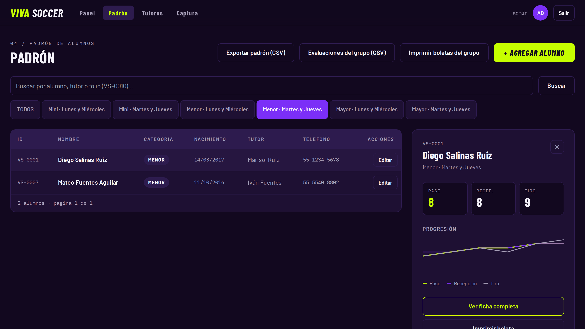
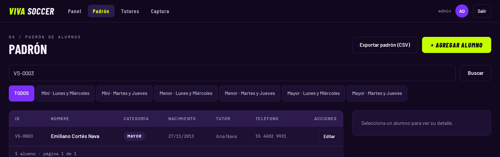
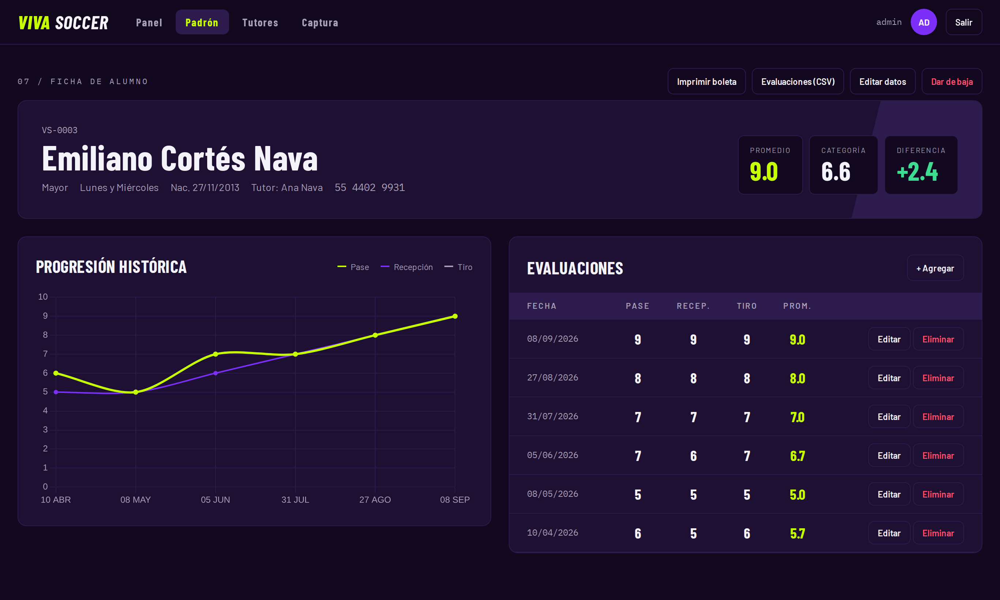
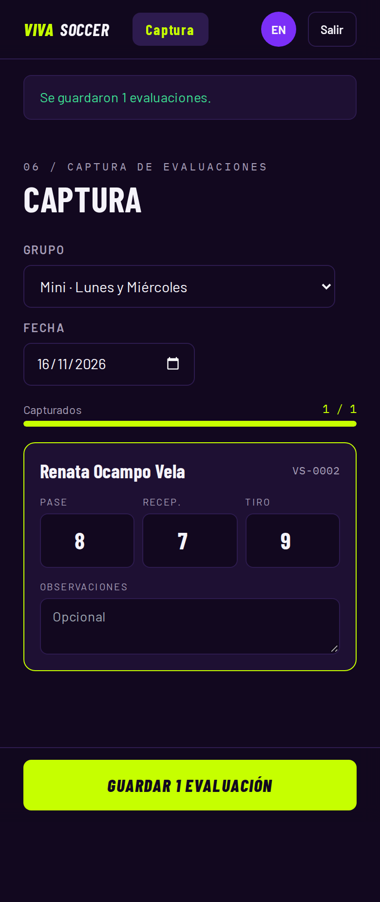
La captura es la pantalla más usada y la única que se diseñó primero para el celular. Cada alumno tiene una tarjeta con tres campos numéricos de 56 px, más grandes que el mínimo de 44 px para el pulgar, y un campo opcional de observaciones de hasta 500 caracteres. El botón de guardado queda fijo abajo y guarda el grupo completo en una sola operación.
El selector de grupo y la fecha recargan la lista al cambiar. Reenviar la captura de una fecha ya capturada actualiza la evaluación en lugar de duplicarla, porque la base de datos solo admite una evaluación por alumno y fecha.
Después de la medición con Lighthouse se agregaron las etiquetas visibles “Grupo” y “Fecha” y se corrigió el ícono del calendario, que no se veía sobre el fondo oscuro (sección 5.6).
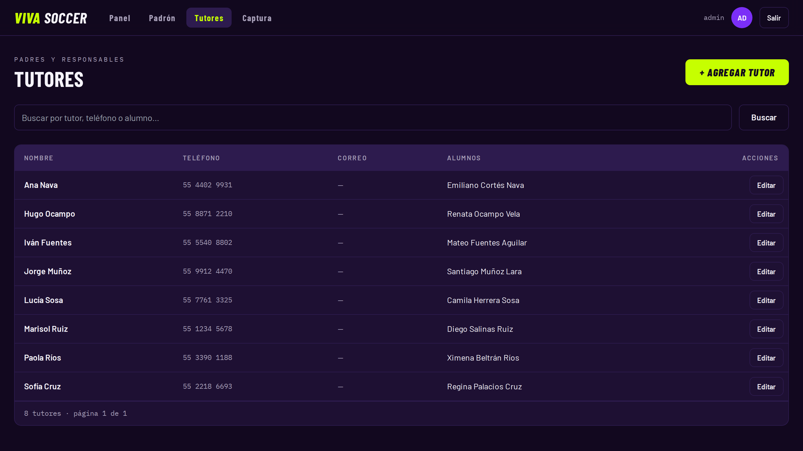
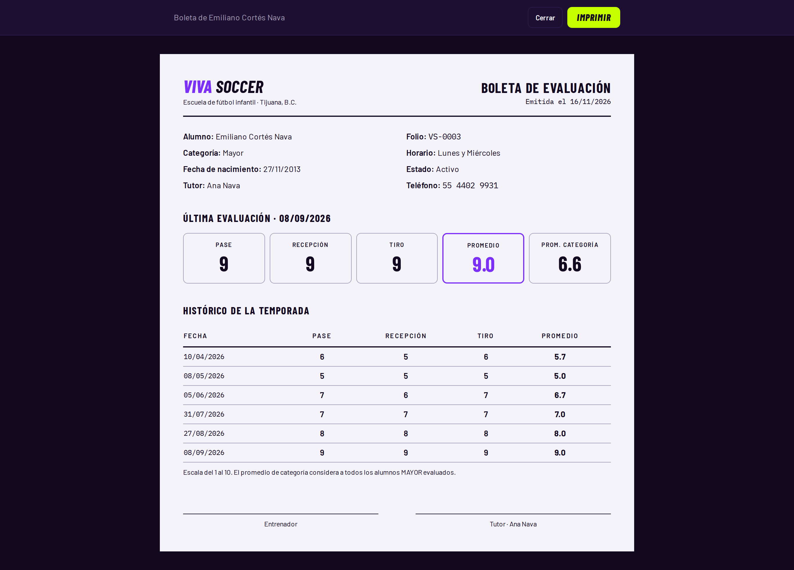
La primera medición con Lighthouse en producción (sección 9.3) dio 80 en accesibilidad en la captura y 96 en el login. Antes de corregir se identificó la causa exacta de cada punto:
| Hallazgo de Lighthouse | Efecto para el usuario | Corrección |
|---|---|---|
Captura: el selector de grupo y la fecha no tienen etiqueta (label, select-name). | Un lector de pantalla los anuncia como “cuadro combinado” y “fecha”, sin decir para qué son. | Etiquetas visibles “Grupo” y “Fecha” que envuelven al control, con la clase .etiqueta del design system. |
Login: la página no tiene región <main>. | Quien navega por regiones no puede saltar directo al contenido. | El contenedor del login pasó de <section> a <main>. |
Todas: falta meta description (SEO 90). | Sin descripción en buscadores y al compartir el enlace. | Descripción en un parcial común a las tres plantillas con <head> propio. |
Login móvil: error en consola por /favicon.ico (404). | Error visible para quien depura; ícono genérico en la pestaña. | Favicon SVG “VS” con los tokens accent y bg-base; una prueba verifica que solo use colores de los tokens. |
| Revisión visual del equipo (no la marcó Lighthouse). | El ícono del calendario salía negro sobre el fondo oscuro. | color-scheme: dark en el campo de fecha. |
Las cuatro correcciones verificables tienen una prueba automatizada (AccesibilidadTests), y la segunda medición en producción dio 100 en accesibilidad, buenas prácticas y SEO en las seis combinaciones de página y dispositivo.
El backend usa Django 5.2.17 sobre Python 3.12. El proyecto se divide en tres paquetes: escuela (modelos, vistas web con HTMX, roles, administración y exportación a CSV), api (la API REST para la aplicación móvil) y vivasoccer (configuración, integración con Sentry y sus pruebas). La web conserva las sesiones de Django; la API usa JWT. Las dos comparten los mismos modelos y las mismas reglas de permisos, de modo que la API se agregó al lado de la web, sin reemplazarla.
Todo el código, los modelos, los campos y la interfaz están en español, y la configuración sensible (cadena de la base de datos, llave secreta, hosts permitidos) se lee de variables de entorno. Con DEBUG apagado, si falta alguna, la aplicación se detiene con un mensaje que dice cuál.
Los modelos son la única fuente de verdad: el folio, el promedio y la temporada se calculan en el modelo, nunca en el cliente. La Figura 11 (sección 7) muestra sus relaciones.
| Modelo | Qué representa y reglas principales |
|---|---|
Tutor | Padre, madre o responsable; teléfono con formato 55 1234 5678. Un tutor puede tener varios hijos. Su campo usuario (uno a uno, opcional) es la cuenta con la que entra a la app móvil. |
Alumno | Menor de edad con categoría (MINI, MENOR, MAYOR), horario (lunes y miércoles o martes y jueves) y tutor. El folio VS-0001 se deriva del id. La baja lo desactiva y conserva su histórico; un tutor con alumnos no se puede borrar (PROTECT). |
Evaluacion | Pase, recepción y tiro de 1 a 10, observaciones (hasta 500 caracteres) y quién la capturó. Una sola por alumno y fecha, como restricción de la base de datos. fecha es el día en la cancha y creada cuándo llegó al servidor; client_uuid lo genera el celular para que reenviar no duplique. |
AsignacionEntrenador | Liga a un entrenador con un grupo (categoría + horario); única por entrenador y grupo. Define qué alumnos ve en la API. |
CodigoActivacion | Código de 8 caracteres, de un solo uso, que la escuela entrega al tutor para crear su contraseña. Sin caracteres confundibles (0/O, 1/I/L) y con vigencia de 7 días. |
Dispositivo | Token de notificaciones push de Expo, único; si otro usuario inicia sesión en el mismo celular, se le reasigna. |
Comunicado | Aviso de la escuela, general o dirigido a una categoría, con fecha de publicación. |
Los cuatro roles son grupos de Django, definidos en escuela/roles.py, cada uno con su función es_<rol> y su decorador solo_<rol>.
| Rol | Qué puede hacer | Dónde |
|---|---|---|
| Administrador | Todo. Cuenta también como secretaria y entrenador, y ve los seis grupos sin necesidad de asignaciones. | Web y admin de Django. |
| Secretaria | Padrón (alta, edición, baja y reactivación), tutores, corrección y borrado de evaluaciones, boletas, CSV, y en el admin los códigos de activación y los comunicados. No entra al panel ni a la captura. | Web y admin de Django. |
| Entrenador | Captura de evaluaciones. En la API solo ve los alumnos activos que hoy están en sus grupos asignados. | Web (captura) y API. |
| Tutor | Consulta de sus hijos (incluidos los dados de baja), su histórico y los comunicados que le tocan. El administrador no hereda este rol: ser tutor es ser el padre de alumnos concretos, no un permiso. | Solo API. |
Los permisos se resuelven en el servidor, nunca en el cliente. Dos funciones son la única regla de visibilidad de la API: alumnos_del_entrenador(user) y alumnos_del_tutor(user). Lo que queda fuera responde 404, de modo que un usuario no puede ni siquiera confirmar que un alumno ajeno existe. En la web, un usuario con sesión que entra a una pantalla de otro rol vuelve a su propia pantalla, y uno sin rol recibe 403.
La API vive bajo /api/v1/, responde JSON y reporta los errores como {"detail": "..."} con el código HTTP correcto, formato del que depende la aplicación móvil. Usa Django REST Framework 3.18 y Simple JWT: el token de acceso dura 15 minutos y el de renovación 30 días; al renovarse, el anterior se invalida (rotación con lista negra). El login y la activación tienen un límite de 10 intentos por minuto.
| Endpoint | Uso |
|---|---|
POST /token/, POST /token/refresh/ | Inicio de sesión y renovación del token. |
POST /activar/ | El tutor canjea su código y crea su contraseña. |
GET /mis-grupos/ | Grupos del entrenador. |
GET /alumnos/?grupo= | Alumnos del grupo, con marca de si ya se evaluaron hoy. |
POST /evaluaciones/ | Captura. Idempotente por client_uuid; una segunda evaluación del mismo alumno y fecha responde 409. |
PATCH /evaluaciones/<id>/ | Corrección, solo el mismo día. |
GET /alumnos/<id>/evaluaciones/ | Histórico y progresión (entrenador o tutor). |
GET /mis-hijos/ | Hijos del tutor autenticado. |
GET /comunicados/ | Comunicados generales y de las categorías de sus hijos activos. |
POST /dispositivos/ | Registro del token de notificaciones de Expo. |
La cuenta de un tutor no se registra sola, porque se trata de información de menores: la secretaria genera un código desde el admin y el padre lo canjea. El canje ocurre en una sola transacción y gasta el código con un UPDATE condicionado a que no se haya usado ni vencido; si dos peticiones llegan a la vez, solo una gana. Si algo falla, se revierte todo y el código sigue vigente.
La captura sin conexión (RF-06) se apoya en dos decisiones del servidor: el client_uuid hace que reenviar la misma evaluación no la duplique, y la fecha puede ser de hasta 7 días atrás, para sincronizar lo capturado en la cancha. La cola local pertenece a la aplicación móvil.
UniqueConstraint en la base de datos; la web actualiza la existente y la API responde 409.55 1234 5678 con expresión regular.DEBUG apagado, faltar DATABASE_URL, DJANGO_SECRET_KEY o DJANGO_ALLOWED_HOSTS detiene la aplicación con un mensaje claro.El buscador del padrón encuentra un folio escrito como VS-0010, vs0010, 0010 o 10, además de por alumno o tutor, y respeta el filtro de grupo. La regla para leer un folio vive en el modelo (Alumno.id_de_folio), junto a la que lo genera; un número de teléfono de 10 dígitos no se confunde con un folio.
El panel muestra los grupos con alumnos activos que no tienen evaluaciones en los últimos 7 días, contando el día de hoy, con la fecha de la última evaluación o “Nunca evaluado” y un enlace a su captura. Se calcula con una sola consulta agrupada; los grupos sin alumnos activos no aparecen, porque no hay a quién evaluar.
Tres descargas, solo para administrador y secretaria: el padrón con la misma búsqueda y grupo que se ven en pantalla (incluidas las bajas), las evaluaciones de un grupo y el histórico de un alumno, aunque esté dado de baja. Los archivos van en UTF-8 con BOM, para que Excel abra bien los acentos. Como los nombres y las observaciones los escribe la gente, una celda que empieza con =, +, - o @ se guarda con un apóstrofo delante para que Excel no la ejecute como fórmula (OWASP Foundation, s. f.). Las boletas imprimibles cubren la parte de reportes en PDF.
| ID | Requerimiento | Estado | Notas |
|---|---|---|---|
| RF-01 | Inicio de sesión y redirección por rol | Completo | Web con sesión; API con JWT. |
| RF-02 | Alta y edición de alumnos con tutor y folio | Completo | Incluye baja y reactivación conservando el histórico. |
| RF-03 | Padrón con búsqueda y filtros | Completo | Búsqueda por folio agregada el 16 de noviembre. |
| RF-04 | Captura de pase, recepción y tiro | Completo | Web mobile-first y API. |
| RF-05 | Una evaluación por alumno y fecha | Completo | Restricción de base de datos; 409 en la API. |
| RF-06 | Captura sin conexión | Del lado de la API | Sincronización idempotente con client_uuid; la web no tiene modo sin conexión. |
| RF-07 | Indicadores del panel | Completo | Grupos sin evaluar agregados el 16 de noviembre. |
| RF-08 | Ficha con historial y gráfica | Completo | Con comparación contra el promedio de la categoría. |
| RF-09 | Portal para familias | Del lado de la API | Hijos, histórico, comunicados y activación de cuentas; la interfaz es la app móvil. |
| RF-10 | Reportes PDF y CSV | Completo | Boletas imprimibles y tres CSV. El filtro por temporada no se implementó. |
| RF-11 | Gestión de cuentas | Parcial | Desde el admin de Django (códigos, asignaciones); sin interfaz propia. |
Todos los requerimientos con prioridad Must de la propuesta (RF-01 a RF-05, RF-07 y RF-08) están completos en la web; de los Should, RF-10 está completo y RF-06 y RF-09 se resolvieron del lado de la API.
En producción y en desarrollo la base es PostgreSQL 18, administrado por Neon; las pruebas usan SQLite en memoria (o PostgreSQL de servicio en el CI). El esquema se maneja con las migraciones de Django (de la 0001 a la 0010); las migraciones de datos crean los grupos de cada rol y sus permisos.
El diagrama entidad-relación (Figura 11) refleja tres decisiones del modelo. La relación entre alumno y tutor es una sola llave foránea, así que cada alumno tiene un solo tutor con acceso a la aplicación. La cuenta del tutor es opcional y, si se borra el usuario, el tutor y sus hijos se conservan. Y la evaluación guarda tanto la fecha en la cancha como la fecha de llegada al servidor, porque con la captura sin conexión pueden ser días distintos.
En la arquitectura (Figura 12), la aplicación web y la API corren en un solo servicio de Railway: gunicorn sirve Django, y WhiteNoise sirve los archivos estáticos comprimidos y con un hash en el nombre, de modo que el navegador los guarda en caché sin riesgo de quedarse con una versión vieja. Railway no tiene base propia: la web y la aplicación móvil comparten la rama production de Neon.
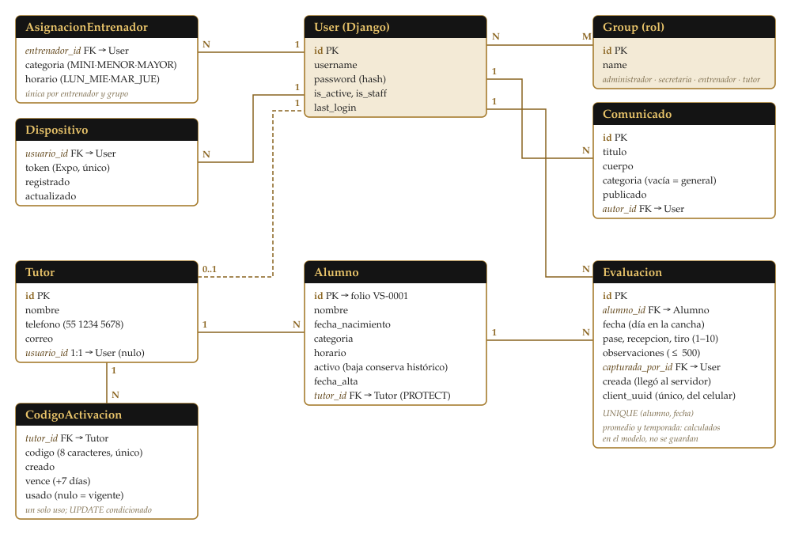
escuela/models.py y de las tablas de usuarios y grupos de Django. En fondo claro, las tablas de Django.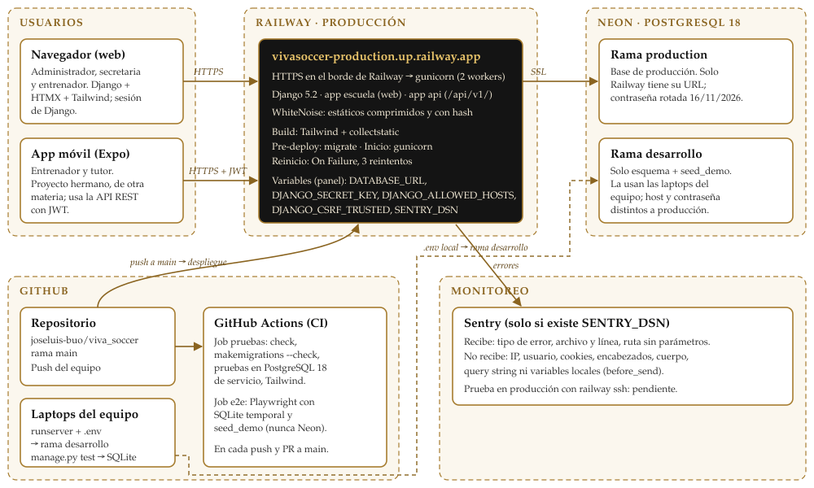
El repositorio tiene {{COMMITS}} commits en la rama main, {{COMMITS_DESDE}} de ellos posteriores al segundo avance. La regla del proyecto es que cada cambio de comportamiento llegue con su prueba; en el cierre, además, cada commit se revisó (diff y mensaje) antes de hacerse.
| Fecha | Cambios |
|---|---|
| 8 sep 2026 | Primera entrega: modelos, roles administrador y entrenador, captura, panel y ficha. |
| 29 sep 2026 | Configuración por variables de entorno, WhiteNoise y llave secreta obligatoria en producción. |
| 14 oct 2026 | Rol de secretaria: tutores, bajas, corrección de evaluaciones y boletas (segundo avance). |
| 22 oct 2026 | PostgreSQL en Neon; modelos para la app móvil; API del entrenador y del tutor; observaciones y comunicados; configuración para Railway. |
| 9 y 11 nov 2026 | Eliminación de consultas N+1 en boletas y panel; CORS para la app móvil. |
| 16 nov 2026 | Corrección de la configuración insegura; seed_demo protegido; CI; ramas de Neon; RF-03, RF-07 y RF-10; E2E; Sentry; despliegue en Railway; Lighthouse y accesibilidad; aislamiento de las pruebas; configuración de Railway en el panel. |
El archivo .github/workflows/ci.yml corre en cada push y cada pull request a main, con dos trabajos independientes:
manage.py check, makemigrations --check (falla si un cambio de modelo no tiene su migración), las pruebas contra un PostgreSQL 18 de servicio (la misma versión que Neon) y la compilación de Tailwind.El CI está en verde desde el último push. Antes estuvo en rojo en dos pushes, por una prueba que solo pasaba en las máquinas del equipo (hallazgo 5 de la sección 8.6).
La base es un proyecto de Neon con dos ramas. Una rama de Neon es una copia independiente de la base, con su propio host y sus propias credenciales (Neon, s. f.).
| Entorno | Dónde corre | Base |
|---|---|---|
| Producción | Railway | Rama production. Solo Railway tiene su URL. |
| Desarrollo | Laptops del equipo | Rama desarrollo, creada con solo el esquema y llenada con seed_demo. |
| Pruebas | manage.py test | SQLite en memoria, también en los procesos hijos; con TEST_POSTGRES=1, PostgreSQL. |
| CI | GitHub Actions | PostgreSQL 18 desechable y, para la E2E, SQLite temporal. |
La rama de desarrollo se creó con solo el esquema para no copiar a las laptops los datos ni los hashes de contraseñas de producción. Una rama así trae las tablas pero no el registro de migraciones aplicadas, de modo que migrate habría fallado; por eso, con la rama recién creada y vacía, se borraron sus tablas y se reconstruyó con migrate, que además crea los grupos y permisos de las migraciones de datos.
La aplicación se desplegó el 16 de noviembre de 2026 en vivasoccer-production.up.railway.app, desde la web de Railway y conectada al repositorio. En cada push a main, Railway construye (instala dependencias, compila Tailwind y corre collectstatic), migra la base antes de publicar (si una migración falla, la versión anterior sigue en línea) y arranca gunicorn.
Railway retiró su configuración como código: railway.json deja de leerse el 1 de diciembre de 2026 (Railway, s. f.-a). Su reemplazo, Infrastructure as Code, requiere Node o un SDK de Python en beta (Railway, s. f.-b). Para no meter dependencias diez días antes de la entrega, la configuración se pasó al panel del servicio y se documentó campo por campo en el README; railway.json se borró después de confirmar que el despliegue seguía funcionando.
| Campo del panel | Valor |
|---|---|
| Builder | Railpack |
| Build | python bin/compilar_css.py && python manage.py collectstatic --noinput |
| Pre-deploy | python manage.py migrate --noinput |
| Inicio | gunicorn vivasoccer.wsgi --workers 2 --access-logfile - |
| Reinicio | On Failure, máximo 3 reintentos |
Las variables de entorno del servicio son DATABASE_URL (rama production), DJANGO_SECRET_KEY, DJANGO_ALLOWED_HOSTS, DJANGO_CSRF_TRUSTED y SENTRY_DSN. Ningún valor está en el repositorio. Railway define además RAILWAY_ENVIRONMENT_NAME, con la que la aplicación reconoce que está en producción y apaga DEBUG aunque alguien intente encenderlo: con DEBUG, las páginas de error mostrarían datos de los alumnos.
Sentry recibe los errores de producción, pero los alumnos son menores de edad, así que la integración se configuró para enviar lo mínimo (Sentry, s. f.). Se activa solo si existe SENTRY_DSN; en desarrollo, pruebas y CI no se envía nada.
send_default_pii=False: sin IP, cookies ni identidad del usuario.include_local_variables=False: las variables de una función pueden contener un alumno completo.max_request_body_size="never": el cuerpo de un formulario lleva nombres, teléfonos y observaciones.before_send propio quita el query string (la búsqueda del padrón lleva nombres), los encabezados, las cookies y los datos del usuario.traces_sample_rate=0: solo errores, sin monitoreo de rendimiento.Una prueba provoca un error real a través de la aplicación WSGI, la misma que usa gunicorn, con el nombre de un alumno en la URL, el cuerpo y un encabezado, un teléfono en una variable local, una contraseña, una cookie y una IP, y verifica que ninguno llegue al evento. Con la configuración por defecto de Sentry, esa misma prueba encontraba el nombre, el teléfono, la contraseña y la IP. La verificación manual en producción, enviando un error desde el contenedor con railway ssh, está pendiente.
Las pruebas y las revisiones del 16 de noviembre encontraron siete problemas reales. Se reportan con su causa y su corrección porque son parte del resultado del proyecto.
Qué pasó. Un commit agregó al final de settings.py un bloque, sin condición de DEBUG, que permitía los hosts localhost, 127.0.0.1 y la IP de la red de casa de un compañero, y CORS para cualquier origen 192.168.*, también en producción.
Cómo se detectó. Dos pruebas de ConfiguracionProduccionTests, que importan la configuración simulando el entorno de Railway, fallaron. No había CI, así que el commit no se detuvo.
Corrección. El bloque pasó al if DEBUG que ya existía, con dos pruebas nuevas; el commit nunca llegó a producción. El CI se creó en parte por este caso.
Qué pasó. Todo el equipo usaba la misma base de Neon, y el comando de datos de ejemplo seed_demo la había llenado. Una consulta de solo lectura confirmó que admin (único superusuario), secretaria, entrenador y la cuenta de tutor demo existían, estaban activas y seguían con sus contraseñas de ejemplo.
Corrección. Se cambiaron las contraseñas en esa base; seed_demo ahora se niega a correr con DEBUG apagado, con mensaje y código de salida de error, y tiene dos pruebas. La causa de fondo era la base compartida, que se resolvió con el hallazgo 3.
Qué pasó. DEBUG describe el proceso, no la base: un seed_demo corrido desde una laptop con DEBUG encendido escribía en la base que después sería de producción.
Corrección. Se separaron las ramas production y desarrollo de Neon (sección 8.3); .env.example dejó de traer el host de producción y el README documenta qué base usa cada entorno.
Qué pasó. Mientras la base fue compartida, todos los que desarrollan conocían la contraseña de la base de producción. Más tarde, la de desarrollo quedó expuesta dos veces: parcialmente, en el mensaje de error de una prueba que imprimió la cadena de conexión, y completa, en un mensaje que no era privado.
Corrección. La contraseña de production se rotó antes de dársela a Railway, y la de desarrollo se rotó las dos veces. Las rotaciones se hicieron con la CLI de Neon, escribiendo la contraseña directo a su destino, sin mostrarla, y se verificó que la anterior ya no entrara y que la otra rama no cambiara. La prueba que imprimió la cadena se reescribió para que no pueda volver a hacerlo.
Qué pasó. La prueba de Sentry corre en un proceso aparte. En las laptops, ese proceso leía el .env y consultaba la rama de desarrollo de Neon, así que pasaba; en el CI, sin .env, fallaba. El CI estuvo en rojo en dos pushes y Railway desplegó de todos modos.
Corrección. En modo prueba, la configuración exporta DATABASE_URL=sqlite://:memory:, que heredan los procesos hijos y que load_dotenv no sobrescribe; dos pruebas lo verifican. La recomendación para el futuro es activar en Railway la espera al CI antes de desplegar.
Qué pasó. El repositorio tenía railway.json y el README describía el despliegue, pero no existía ningún proyecto en Railway. El estado se había deducido de los archivos de configuración, sin comprobarlo con una petición real.
Corrección. Se desplegó el 16 de noviembre y, desde entonces, el estado de producción solo se reporta después de verificarlo contra el dominio.
Qué pasó. Railway anunció que railway.json deja de leerse el 1 de diciembre de 2026.
Corrección. La configuración se pasó al panel y se documentó en el README (sección 8.4), y el archivo se borró después de confirmar el despliegue.
El proyecto tiene {{TOTAL_PRUEBAS}} pruebas automatizadas (34 en el segundo avance), que pasan con python manage.py test en SQLite y en el CI contra PostgreSQL 18. La tabla las agrupa por lo que verifican; los números se calculan del código fuente al generar este reporte.
| Grupo de pruebas | Pruebas |
|---|
Las de la API incluyen el aislamiento entre grupos y entre familias: un entrenador o un tutor que pide un alumno ajeno recibe 404, tanto en la consulta como en la captura y la corrección. Las de rendimiento verifican que las boletas de un grupo y el panel no hagan una consulta por alumno.
e2e/test_captura.py maneja un navegador Chromium real con pantalla de celular (390 × 844 px): el entrenador inicia sesión, cae en la captura con la fecha de hoy, califica pase 8, recepción 7 y tiro 9 a un alumno con una observación, y guarda. La prueba verifica el mensaje de confirmación, que la tarjeta conserve los valores tras recargar y, leyendo directamente la base, que la evaluación exista con esos valores y con el entrenador como autor.
La prueba levanta su propio servidor con una base SQLite temporal y seed_demo, y se niega a empezar si Django no está usando SQLite; nunca toca Neon. No forma parte de manage.py test, para que nadie necesite un navegador para la suite normal, y en el CI corre como trabajo aparte.
Se midieron login, panel y captura, en móvil y en escritorio, contra producción con Lighthouse 13.6.0 (Google, s. f.), antes y después de las correcciones de la sección 5.6. Para medir las páginas con sesión, se inició sesión en el mismo navegador que usa Lighthouse, sin pasar la cookie como encabezado (que la habría enviado también a los servidores de fuentes), y la sesión se cerró al terminar. Los reportes completos están en docs/lighthouse/antes/ y docs/lighthouse/despues/.
| Página | Formato | Rendimiento | Accesib. | Buenas pr. | SEO | FCP | LCP |
|---|
Antes → después; en negritas, los puntajes que cambiaron. FCP y LCP son de la medición final (4G simulado en móvil).
RNF-03 pide una carga inicial menor a 3 s en una red 4G simulada. El peor caso medido es el login en móvil, con 1.8 s de FCP y LCP; el resto está entre 0.2 y 0.8 s, sin bloqueo del hilo principal (TBT de 0 ms) y con un desplazamiento de diseño (CLS) de 0.054 o menos. La meta se cumple con margen.
Las pruebas con usuarios no se han realizado; esta sección es el plan para obtener la evidencia de OE1 a OE4 y OE7. Sigue el método de la propuesta (§5).
| Aspecto | Plan |
|---|---|
| Participantes | Cinco por perfil (coordinación y entrenadores), suficiente para encontrar la mayoría de los problemas de usabilidad (Nielsen, 2000). |
| Tareas | Entrenador: capturar a un grupo de 15 alumnos en el celular. Coordinación: dar de alta a un alumno con un tutor nuevo, encontrar a un alumno por folio, corregir una evaluación e imprimir una boleta. |
| Métricas | Tasa de éxito sin ayuda (meta: 90 %), tiempo por alumno en la captura (meta: 20 s o menos) y por alta (meta: menos de 2 min), y errores de validación. |
| Satisfacción | Cuestionario SUS de 10 reactivos al final. A cada reactivo impar se le resta 1 a la respuesta y a cada reactivo par se le resta a 5 la respuesta; la suma se multiplica por 2.5 (Brooke, 1996). Meta: 75 o más; el promedio de referencia es 68 (Sauro, 2011). |
| Severidad | Cada problema observado se califica de 0 a 4; los de severidad 3 o 4 se corrigen y se vuelven a probar (OE7). |
| Datos de menores | Las sesiones usan la rama de desarrollo con datos ficticios; no se graban rostros ni datos de alumnos reales (LFPDPPP, 2025). |
Lo que se cumplió. VIVA SOCCER está en producción, en la nube, con los requerimientos Must de la web completos y una API que la aplicación móvil puede consumir con los permisos de cada rol resueltos en el servidor. El design system pasó al código sin pérdidas: los colores solo existen como tokens, y lo evaluado en el diseño es lo que se implementó. Las metas que se pueden medir con herramientas se cumplieron con evidencia: 100 en accesibilidad, buenas prácticas y SEO, y una carga inicial de 1.8 s en el peor caso, contra una meta de 3 s.
Lo que enseñaron las pruebas. Las {{TOTAL_PRUEBAS}} pruebas automatizadas no solo confirmaron que el código hace lo que debe: detectaron una configuración insegura antes de que llegara a producción, y la separación de entornos surgió de revisar, en solo lectura, qué había realmente en la base. La lección más general fue distinguir entre lo configurado y lo verificado: un archivo de despliegue no es un despliegue, y una prueba que pasa en una laptop no pasa necesariamente en el CI. Con datos de menores, además, la privacidad se diseña: qué se envía a un servicio externo, quién conoce cada contraseña y qué imprime un mensaje de error.
Trabajo futuro.
design.html.railway ssh y activar en Railway la espera al CI antes de desplegar.manage.py check --deploy.Big Sky Software. (s. f.). htmx documentation. Recuperado el 16 de noviembre de 2026, de https://htmx.org/docs/
Brooke, J. (1996). SUS: A “quick and dirty” usability scale. En P. W. Jordan, B. Thomas, B. A. Weerdmeester y I. L. McClelland (Eds.), Usability evaluation in industry (pp. 189–194). Taylor & Francis.
Django Software Foundation. (s. f.). Django documentation (versión 5.2). Recuperado el 16 de noviembre de 2026, de https://docs.djangoproject.com/en/5.2/
Encode OSS. (s. f.). Django REST framework. Recuperado el 16 de noviembre de 2026, de https://www.django-rest-framework.org/
Google. (s. f.). Lighthouse overview. Chrome for Developers. Recuperado el 16 de noviembre de 2026, de https://developer.chrome.com/docs/lighthouse/overview
International Organization for Standardization. (2018). ISO 9241-11:2018. Ergonomics of human-system interaction. Part 11: Usability: Definitions and concepts. ISO.
Ley Federal de Protección de Datos Personales en Posesión de los Particulares. (2025). Diario Oficial de la Federación, 20 de marzo de 2025.
Microsoft. (s. f.). Playwright for Python. Recuperado el 16 de noviembre de 2026, de https://playwright.dev/python/
Neon. (s. f.). Branching. Neon Docs. Recuperado el 16 de noviembre de 2026, de https://neon.com/docs/introduction/branching
Nielsen, J. (1994). Heuristic evaluation. En J. Nielsen y R. L. Mack (Eds.), Usability inspection methods (pp. 25–62). John Wiley & Sons.
Nielsen, J. (2000). Why you only need to test with 5 users. Nielsen Norman Group. https://www.nngroup.com/articles/why-you-only-need-to-test-with-5-users/
OWASP Foundation. (s. f.). CSV injection. Recuperado el 16 de noviembre de 2026, de https://owasp.org/www-community/attacks/CSV_Injection
Railway. (s. f.-a). Config as code. Railway Docs. Recuperado el 16 de noviembre de 2026, de https://docs.railway.com/config-as-code
Railway. (s. f.-b). Infrastructure as code. Railway Docs. Recuperado el 16 de noviembre de 2026, de https://docs.railway.com/infrastructure-as-code
Sauro, J. (2011). A practical guide to the System Usability Scale: Background, benchmarks & best practices. Measuring Usability LLC.
Sentry. (s. f.). Data management: Sensitive data (Python). Sentry Docs. Recuperado el 16 de noviembre de 2026, de https://docs.sentry.io/platforms/python/data-management/sensitive-data/
Tailwind Labs. (s. f.). Tailwind CSS documentation (v3). Recuperado el 16 de noviembre de 2026, de https://v3.tailwindcss.com/docs
World Wide Web Consortium. (2018). Web Content Accessibility Guidelines (WCAG) 2.1. https://www.w3.org/TR/WCAG21/